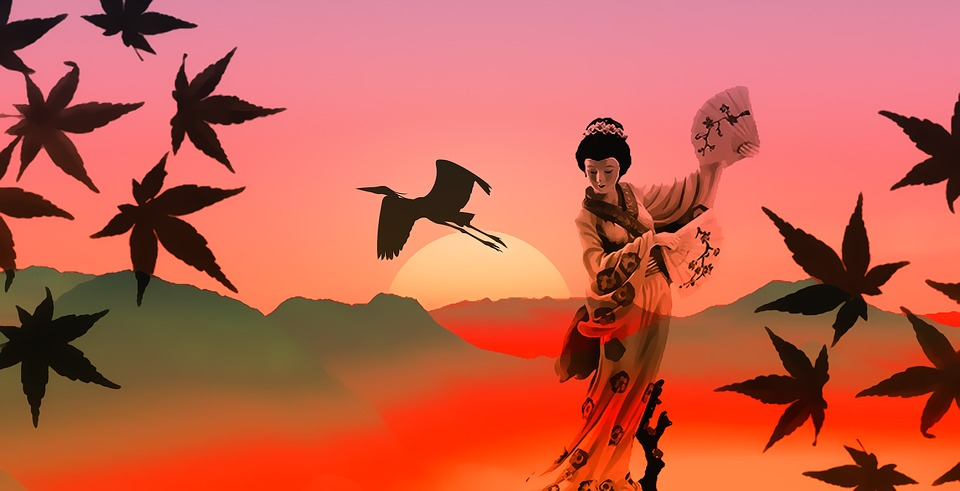
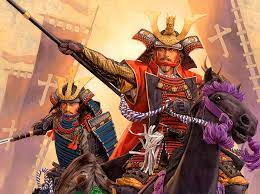

Japanese people always display modesty and humility. People often bow to convey the message: “I am not above you. I respect you.” Bowing longer with a higher degree of angle means more respect. Additionally, Japanese people have two religions at the same time: they are both Buddhist and Shintoist
The Battle of Sekigahara was a decisive battle on October 21, 1600 in what is now Gifu prefecture, Japan, at the end of the Sengoku period.
